报名前信息集下应用统计硕士
拟录取初试低位分数的概率预测
摘 要
研究生招生要求考生在成绩与当年竞争强度揭示前完成单志愿选择。本文不把择校简化为预测一条确定“录取线”，而是在报名前信息集下预测普通统考全日制最终拟录取者初试总分第 10 百分位，并将其称为“拟录取初试低位风险指标”。该指标用于比较学校风险，不是制度分数线，也不等于个人最终录取概率。
研究覆盖 81 所传统 985/211 院校、2022-2026 年 405 条校年记录，其中 295 条可构造 Q10 代理。公开名单经隐私最小化 OCR、图例识别和校年汇总核对后，共保留 14,317 条可读初试总分：9,073 条已录取、2,444 条明确未录取、2,800 条录取状态未知但分数可用。质量闸门最终确认 77 个样本量不少于 10 的精确校年，含 44 所学校、2,312 名普通统考全日制拟录取者；另有 5,199 条已录取分数作为降权软证据，1,562 条保留在诊断复核层。字段级台账将 3,690 个非空核心值中的 3,685 个链接到公开来源，独立来源目录汇总 940 个公开 URL。
本轮首先修复了回测与正式预测对国家线波动处理不一致的问题。修复后，2024-2026 年 226 条时间外记录上的加权 MAE 为 17.66 分，稳健边际锚点为 17.12 分，优于上一年锚点 18.58 分和复杂候选 20.35 分；原始 P90 总体覆盖率为 82.9%。严格校准检验只使用更早时间外残差，覆盖 2025-2026 年 155 条记录：原始 P90 覆盖率为 79.7%，WIS 为 9.98。
73 个精确—代理配对显示：顺序统计插值的配对 MAE 为 3.14 分、平均低估 2.85 分；仅最低分代理的配对 MAE 为 6.05 分、平均低估 6.05 分。把精确标签替换进历史状态并重算滞后特征后，54 个 2024-2026 年精确回测校年的 P50 MAE 由 15.83 分降至 14.90 分；年份等权 MAE 差为 -1.51 分，90% 年份分块 bootstrap 区间为 [-2.68,-0.33]。但有效日历年只有 3 个，结论仍属回溯性证据。逐人样本进一步表明总方差的 46.1% 来自校年内个体差异，10.9% 来自同校跨年波动，43.0% 来自院校间差异；同校上一期分布形状可把分位形状 MAE 从 6.05 降至 5.73，而软证据带来的额外改善不足 0.01 分，未通过简约性护栏。
在 200 个录取与未录取均不少于 3 人的复试队列中，初试分数区分录取结果的 AUC 中位数为 0.876，但结果分布仍有重叠，进一步说明 Q10 是风险指标而非制度性录取线。将这些队列特征严格滞后后加入中心预测，在仅有的 2026 年 14 个重叠校年上使 MAE 由 16.59 分恶化至 21.84 分，故未晋级。所有新增结果均保留为 2026-10-09 的回溯实验，不覆盖 2026-10-08 已冻结的 2027 前瞻基线。
关键词：考研择校；应用统计；分位数预测；滚动回测；概率校准；分布鲁棒；事件情景
目 录
- 一、引言3
- 1.1 研究背景与意义 1.2 研究对象与预测目标 1.3 研究内容与主要贡献3
- 二、理论机制与研究框架4
- 三、数据与研究设计5
- 3.1 研究边界 3.2 符号 3.3 来源 3.4 代理 3.5 权重 3.8 三层分布5
- 四、门槛预测方法14
- 4.1 动态特征 4.2 贝叶斯正则化 4.3 分位数提升 4.4-4.7 锚点、滚动选择与分布形状14
- 五、事件冲击与预测不确定性18
- 六、从门槛分布到择校决策20
- 七、实证结果23
- 八、稳健性分析29
- 九、讨论：方法价值、局限与推广31
- 十、结论33
- 参考文献34
- 附录 A：2027 年 81 所院校预测表35
- 附录 B：数据字典、复现协议与隐私边界37
一、引言
1.1 研究背景与意义
普通高考通常在成绩揭示后填报多个平行志愿，而全国硕士研究生招生考试要求考生在初试前即确定一所招生单位和一个专业。报名时，考生尚不知道自己的正式成绩，也不知道同年报考人数、考生能力分布及最终招生执行情况。一次错误选择几乎没有同批次志愿可以分散风险，调剂又受到专业课、院校政策与名额等约束。因此，“某校今年大约多少分”并不是充分问题；真正需要回答的是：在报名时点已有信息下，该校当年普通统考全日制录取门槛可能落在什么区间，个人估分覆盖该门槛的概率有多大，最坏但仍较常见的情形需要准备到多少分。
传统做法往往把上一年复试线、近年均值或模拟卷分数直接比较。这种直觉方法忽略四类结构：其一，复试线与最终拟录取低位分数并不等价；其二，国家线变化会使所有学校共同移动；其三，上一年异常爆冷或爆热会触发下一年考生迁移；其四，考纲、参考书、学制、名额等事件会改变报考成本与市场预期。本文将这些结构转化为可审计变量和概率分布。
1.2 研究对象、预测时点与目标
本文研究范围限定为传统 985/211 院校中招收全日制 025200 应用统计专业硕士的 81 所学校，不区分研究方向。预测时点为当年正式报名开始前，信息集记为 \(\mathcal F_{\tau_t}\)。仅保留普通统考、全日制样本，排除明确的专项计划、非全日制、调剂和不属于普通统考的记录。
设学校为 \(s\)，招生年份为 \(t\)，普通统考全日制拟录取初试总分集合为 \(\mathcal A_{s,t}\)。首选预测目标定义为：
这里的 \(Y_{s,t}\) 是学校层面的“拟录取低位门槛”，不是复试线，也不是某个具体考生的录取结果。选取第 10 百分位而非绝对最低分，是为了降低单个破格、少数民族骨干计划误混、同分特殊情况或数据录入异常对目标的支配。
1.3 研究内容与主要贡献
围绕报名前单志愿决策中的“目标不可直接观测、历史样本短、政策事件方向不确定、概率结果难以解释”等特征，本文形成以下四方面工作：
- 建立可审计且不浪费已有信息的目标测量层。统一异质招生材料的统计口径；对名单对账通过者直接计算精确 Q10，对内部一致但未完全对账者作为降权软证据，对结果状态未知者只估计复试队列分布。所有记录均保留原始证据、用途标签与人工复核入口。
- 建立适用于短面板的稳健预测层。通过相对国家线建模分离公共波动，以严格滞后特征描述历史难度、市场反转和竞校迁移，并由时间外回测约束复杂模型的使用范围。
- 建立事件驱动的概率分布层。将考纲、参考书、名额和学制变化表示为方向不确定的三情景混合分布，与国家线波动、模型残差和未知事件风险共同形成保守上界。
- 建立面向报名决策的解释层。区分校年内拟录取分布 (F^{adm}_{s,t})、其低位分位数 (T_{s,t}) 与未来门槛预测分布 (G_{s,t})，输出 P50、P80、P90、P95、估分覆盖概率、情景及不确定性分解，并用复试队列数据实证说明其与最终录取概率之间的边界。
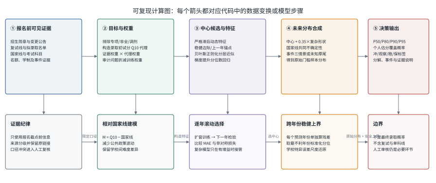
paper/scripts/build_paper_analysis.py 根据实际数据结构与模型实现生成。
二、理论机制与研究框架
2.1 目标测量误差与证据分级
当前数据最主要的困难不是算法选择，而是目标不可直接观察。学校公布材料可能只有复试线、拟录取最低分或部分学院名单；同一学校不同年份的来源又可能来自官网、研招网转载或第三方汇总。若简单把所有可见分数当作同一标签，复杂模型只会更精确地拟合口径差异。
因此本文不再采用“通过质量闸门即使用、未通过即删除”的二元逻辑，而建立按用途分层的证据结构。精确层要求名单人口口径、图例、人数及可得汇总统计相互一致，可直接形成经验 Q10；软证据层要求专业、学习方式、图例、排序与 OCR 质量内部一致，但与外部汇总尚未完全对账，只能降权进入分布形状或观测误差敏感性；诊断层保存口径不明、特殊人群或状态未知的可读成绩，用于发现数据问题、估计复试队列分布和安排人工复核。110 条只有复试线而没有 Q10 代理的校年记录也继续保留为辅助信息。这样，未晋级为精确标签不等于数据被丢弃，只意味着其统计角色受到限制。
2.2 短面板数据中的稳健预测
81 所学校每校最多只有 5 个年度观测，若为每所学校拟合独立时间序列，样本远不足以识别趋势；若把所有学校完全合并，又会抹平学校层面的长期难度。本文采用“相对国家线的边际分 + 跨校共享系数 + 学校部分池化近似”的思路，并保留简单锚点作为基准。
市场行为以两个滞后量进入模型。上一年学校相对自身历史异常偏高，可能引发报考退潮；异常偏低，可能引发次年拥入，表现为市场反转。同类型、同分区、历史难度相近学校的上一年异常还可能改变本校竞争，表现为竞校溢出。二者都必须使用 \(t-1\) 年及以前信息，不能把 \(t\) 年最终录取人数等报名后结果作为当年特征。
2.3 事件冲击与考生市场反馈
考纲或参考书变化同时存在两种相反机制：备考成本提高会使一部分考生退出，而“新旧分数不可比”“上一年爆冷”又可能吸引风险偏好者。缩招通常提高门槛，但也可能因高分考生提前避开而被部分抵消。故事件不宜编码成单一确定增量，而应形成退潮、中性和涌入三个互斥状态及其先验权重。
另一方面，历史残差分布并不稳定。2025 年原始 P90 明显偏保守，2026 年却偏低，说明汇总覆盖率会掩盖日历年漂移。本文因此把“生成原始分布”和“形成稳健安全上界”分开，并按时间顺序完成嵌套检验：预测 2025 年只能使用 2024 年时间外残差，预测 2026 年只能使用 2024-2025 年残差。该设计减少泄漏，却也揭示当前严格校准证据只有两个外层年份。
2.4 从门槛分布到风险决策
逐人原始分数使三个容易混淆的分布能够被明确分开。令 \(A_{i,s,t}\) 为学校 \(s\)、年份 \(t\) 第 \(i\) 名拟录取者初试总分，校年内已实现的拟录取分布为 \(F^{adm}_{s,t}\)，本文目标门槛为 \(T_{s,t}=Q_{0.10}(F^{adm}_{s,t})\)。而报名前真正未知的是未来状态下门槛 \(T_{s,t}\) 的预测分布 \(G_{s,t}\)。逐人样本可改善 \(F^{adm}_{s,t}\) 及其 Q10 抽样误差估计，但不会把一个校年的几十名考生变成几十个独立的时间外预测起点。
令 \(T_{s,t}\) 为学校未来所需门槛，考生在报名时给出的单点估分为 \(x\)。可直接用于择校比较的量为：
它只回答“估分是否覆盖学校低位风险指标”，不包含单科线、复试表现、正式排名与个人估分误差。为了避免一个看似精确的概率遮蔽证据差异，输出还必须同时给出分位数、证据完备度、事件情景和形成路径。
由此，本文的方法链条不是把若干算法并列堆放，而是依次处理四个相互依赖的环节：先定义并测量门槛，再从短面板中选择可靠的预测中心，随后把公共波动与事件冲击传播为完整分布，最后才将分布转换为个人决策量。第三节据此规定数据口径与信息边界，第四至第六节依次给出预测、校准和决策方法。
三、数据与研究设计
3.1 研究边界与建模假设
- 口径可比假设。在排除专项计划、非全日制、调剂和明确异常记录后，同一学校不同年份的普通统考全日制拟录取低位分数具有可比较含义。
- 报名信息集假设。所有进入年份 \(t\) 预测的变量，在 \(\tau_t\) 前已经公开或可由更早数据计算；报名后才揭示的实际录取人数不得作为当年无泄漏特征。
- 相对国家线稳定性假设。国家线能吸收一部分公共试题难度和全国政策波动，使边际分 \(M_{s,t}=Y_{s,t}-L_{z_s,t}\) 比绝对分数更适合跨年建模。
- 有限迁移假设。考生主要在同 985 层级、同国家线分区且历史难度相近的院校间迁移；用该邻域的滞后异常均值近似竞校溢出。
- 代理误差可降权假设。Q10 代理虽有误差，但其可靠程度能由来源等级、构造方法和口径问题近似排序；加权似然可减少低质量记录的影响。
- 事件互斥情景假设。对某一已识别事件，退潮、中性、涌入三种市场状态在单次未来实现中互斥，其权重为结构化专家先验，而非已识别的因果概率。
- 未识别事件厚尾假设。未发现官方变化不等于确认无变化，对无已知事件学校保留零均值厚尾扰动，以承认遗漏事件风险。
- 决策含义限制。覆盖概率仅作为报名风险指标，不被解释为最终录取概率；用户仍需核验招生简章、单科线与复试规则。
3.2 符号约定
| 符号 | 含义 | 单位/取值 |
|---|---|---|
| \(s,t\) | 学校索引与招生年份 | 离散 |
| \(\tau_t\) | 年份 \(t\) 的报名信息截点 | 时间 |
| \(\mathcal A_{s,t}\) | 普通统考全日制拟录取初试总分集合 | 分数集合 |
| \(A_{i,s,t}\) | 第 \(i\) 名普通统考全日制拟录取者的初试总分 | 分 |
| \(F^{adm}_{s,t}\) | 学校—年份内已实现的拟录取初试总分分布 | 分布函数 |
| \(T_{s,t}\) | 校年低位风险状态，\(Q_{0.10}(F^{adm}_{s,t})\) | 分 |
| \(G_{s,t}\) | 报名前信息集下未来 \(T_{s,t}\) 的预测分布 | 分布函数 |
| \(Y_{s,t}\) | 真实但通常不可完整观察的拟录取初试分 Q10 | 分 |
| \(\widetilde Y_{s,t}\) | 由最低分、中位数、人数构造的 Q10 代理 | 分 |
| \(L_{z,t}\) | 分区 \(z\in\{A,B\}\) 的国家线 | 分 |
| \(M_{s,t}\) | 相对国家线的门槛边际，\(\widetilde Y_{s,t}-L_{z_s,t}\) | 分 |
| \(w_{s,t}\) | 来源、代理方式与审计问题合成的观测权重 | \((0,1]\) |
| \(Z_{s,t-1}\) | 学校上一年相对自身历史的稳健异常 | 标准化分数 |
| \(P_{s,t-1}\) | 竞争院校上一年异常均值 | 标准化分数 |
| \(B_{s,t}\) | 滚动回测选出的中心锚点 | 分 |
| \(E_{s,t},U_{s,t}\) | 已知事件情景冲击与未识别事件厚尾扰动 | 分 |
| \(q_\alpha\) | 未来所需门槛分布的 \(\alpha\) 分位点 | 分 |
| \(C_{s,t}(x)\) | 估分 \(x\) 覆盖预测门槛的概率 | \([0,1]\) |
3.3 数据范围、来源与统一口径
数据以学校-年份为基本单元，覆盖 2022-2026 年。基础工作簿是研究者根据公开材料整理形成的证据索引，而不是可脱离原链接单独引用的公共数据库；本研究因此把学校研究生院或学院官网、教育部文件、招生简章、复试与拟录取名单、公告及可复核的公开快照视为底层证据，把工作簿视为字段口径、来源定位和人工判断的汇编层。纳入本次分析的工作簿 SHA256 为 7104049c…6244865，完整哈希、表名、单元格坐标、原始 URL、提取时间及处理状态均写入来源台账。
字段级审计以“学校—年份—字段”为最小单位，而不是给整行笼统挂一个来源。405 条校年记录共有 3,690 个非空核心字段值，其中 3,685 个能够关联至少一个公开 URL，字段链接覆盖率为 99.86%；全部 405 条校年记录至少有一个公开来源。独立来源目录对各字段台账、名单资产和补充证据去重后汇总 940 个公开 URL，并保留结构化标题或可复核的用途说明。需要强调，有 URL只证明可追溯，不等于来源为官方、当前可访问或字段已被独立验证，因此台账另列来源类型、权威等级、现时访问状态与值级核对结果；研究者工作簿只是这些底层证据的内部索引，不作为参考文献中的公共数据集。
2026 年 10 月 9 日的链接健康检查覆盖 694 个唯一 URL，其中 464 个可访问，230 个失效或受阻；失效主要集中在一个已经下线的第三方域名。链接失效不反向否定其历史引用，但会降低当下复核能力。为此，系统又用独立公开接口和名单快照作补充核对：得到 984 个数值一致的年度字段证据，覆盖 356 个校年；另有 642 个培养单位、学习方式、考试科目与学制字段在 79 所学校上实现精确或预先定义的语义等价核对。在 225 个含失效第三方链接的校年中，215 个至少新增一个仍可访问且数值一致的补充来源。765 个数值不一致的候选证据只进入差异审计，绝不覆盖原值。
逐名名单来自“统计战线统数圈”公开展示的历年名单快照及其详情接口，作为二级结构化证据而非院校官方原件。采集程序仅保留学校、专业、年份、图片 URL、内容哈希、录取图例和初试总分；姓名、考生编号、头像、评论及用户标识均不进入公开分析层。452 张名单图片共抽取 14,317 条可读总分，其中 9,073 条被图例识别为已录取、2,444 条明确未录取、2,800 条录取状态未知。重复哈希记录不作二次计数，但保留在资产审计中。
精确标签优先要求录取人数、最低分、中位数和最高分与独立汇总全部一致；对于早期年份外部汇总不完整的名单，只有同时满足人数可核、图例明确、分数单调、排名覆盖充分和 OCR 置信度阈值的校年，才按预先声明的结构一致规则晋级。最终 87 个校年通过核对，其中 77 个校年样本量不少于 10，覆盖 44 所学校和 2,312 名拟录取者。未通过精确闸门的可读成绩不会被一律删除：内部一致的 5,199 条已录取记录作为降权软证据进入分布形状敏感性，另 1,562 条进入诊断复核；结果状态未知的分数只进入复试队列分布，不被转换成录取标签。
学校层面聚合是当前版本的限制：若同校存在不同学院或试卷，采用较保守记录会产生选择偏差；未来应以“学校 × 学院 × 考试科目组合”为基本单元。
主目标模型使用精确 Q10 或 \(\widetilde Y_{s,t}\) 可得、全日制且综合权重不低于 0.12 的校年记录。只有复试线而无录取低位代理的 110 条记录用于展示与辅助核验，不混入主边际标签。历史实际录取人数只可作为下一年的滞后特征，不能冒充报名时已知的计划名额；逐人名单及复试结果同样只在其公开之后用于下一期特征或回溯验证。
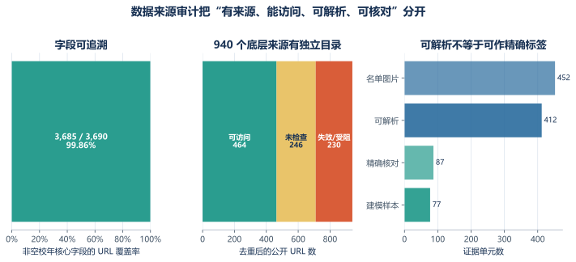
provenance_coverage.json、public_source_bibliography.json 与 candidate_score_extraction.json；图由统一 Python 管线生成。
3.4 Q10 透明代理
设可识别的拟录取人数为 \(n\)，最低分为 \(a\)，中位数为 \(b\)。样本最小值大致对应经验概率 \(p_{\min}=1/(n+1)\)。当 \(p_{\min}\lt0.10\) 且中位数可用时，在最低分与中位数之间作顺序统计插值；否则保守使用最低分：
相应代理基础权重为：顺序统计插值 0.68；小样本最低分 0.48；仅有最低分且无法插值 0.35。若拟录取来源含学校官方 URL，则保持该权重；否则再乘 0.72。代理公式的目的不是声称能从两个统计量恢复真实 Q10，而是给出可复算、可替换的过渡标签。
从统计识别看，最低分与中位数不能唯一确定 Q10。因此更自然的最终模型应把真实低位水平记为潜变量 \(\theta_{s,t}\)，把代理视为带方法特异误差的观测：
其中 \(m_{s,t}\) 表示代理方法。77 个可建模精确校年中有 73 个能与现有代理配对，首次同时覆盖两类主要代理：50 个“最低分—中位数顺序统计插值”配对的 \(Y^{\mathrm{exact}}-\widetilde Y\) 均值为 2.85 分、配对 MAE 为 3.14 分；23 个“仅最低分”配对的均值和 MAE 均为 6.05 分。两类代理均整体向下，但误差尺度明显不同，支持按方法估计 \(\sigma_m\)，也否定了用一个统一折减权重代表全部代理误差的做法。
即使逐名名单完整，经验 Q10 仍有有限样本误差。对每个校年重复抽取拟录取分数并重算 Q10，bootstrap 标准差中位数为 3.09 分、90 分位数为 6.03 分、最大值为 10.18 分。因此“精确”表示名单口径与逐行总分可核，不表示潜在总体分位数无抽样不确定性。样本量较小的专业应自然获得更宽的测量区间。
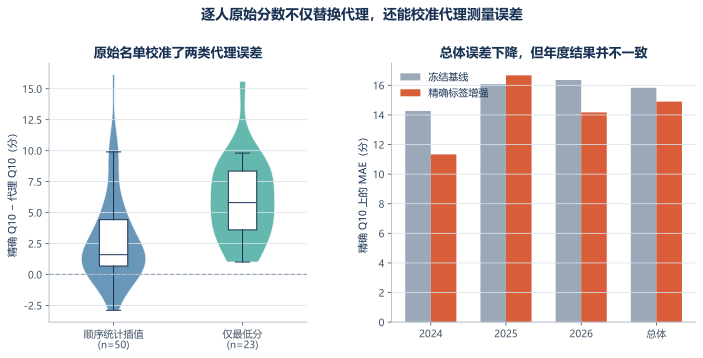
output/experiments/v5_exact_labels_20261009/exact_evaluation/；逐名原表留在本地私有层。
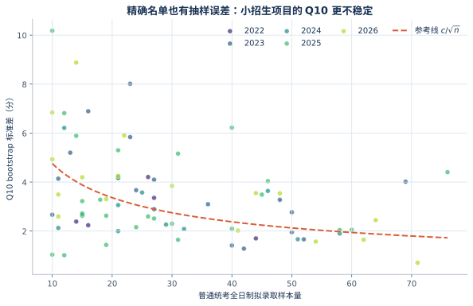
candidate_distribution_summary.csv；图由同一模型程序从逐人样本生成。
3.5 证据等级与审计折减
复试线来源基础权重设置为：官方 1.00、官方二手来源 0.85、第三方 0.62、仅国家线 0.35、未分类 0.50。三类口径问题分别折减：复试比不一致乘 0.70，专项计划排除不清乘 0.55，拟录取最低分低于所选复试线乘 0.55。综合权重写为：
低权重不等于删除。它使模型保留稀缺信息，同时降低不确定记录对参数估计和误差指标的支配；所有触发项都能回溯到原行与原链接。
这些权重仍主要属于结构化专家判断。新增配对数据已经能分别检验顺序统计插值和仅最低分代理的误差，却尚不能把代理方法、来源等级、OCR 质量与口径异常的独立方差完全识别；乘法形式也仍隐含质量维度可分离且按比例作用。因此本文同时报告加权、非加权和分组指标，并把方法特异观测误差模型列为后续替代方案，不凭同一批配对样本直接重估全部生产权重。
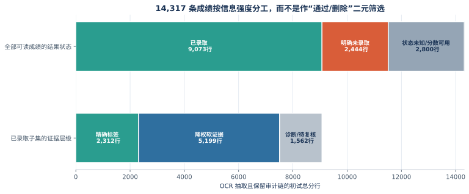
score_row_utilisation.json；图中不含个人标识。
3.6 国家线以上边际分
绝对分数同时受全国试题难度与学校竞争影响。为分离共同波动，定义：
若国家线整体下降而某校相对国家线的边际不变，则模型不应把该下降误判为学校吸引力下降。2022 年 A 区国家线达到 360 分，2025 年降至 323 分，跨年幅度足以扭曲仅对绝对分数求均值的做法。
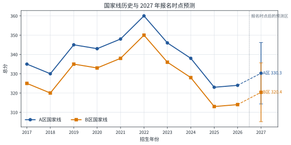
data/processed/national_lines.json；预测来自 app/data/forecast.json。
3.7 缺失值与防泄漏处理
所有动态特征先按学校和年份排序，再整体滞后一阶。对缺失的滞后值，训练管线保留缺失指示变量并使用训练折内部统计量处理；不会用测试年份的真实值回填。2026 年实际招生人数可以进入 2027 年预测，但不能进入 2026 年预测。标准化参数、邻域划分和残差校准都在每个滚动训练窗内由历史数据估计。
至此，预测对象、观测误差、样本权重与报名时点信息集均已固定。下一节所有候选模型都在同一训练样本和同一时间边界下比较，从而把模型差异与数据口径差异分离开来。
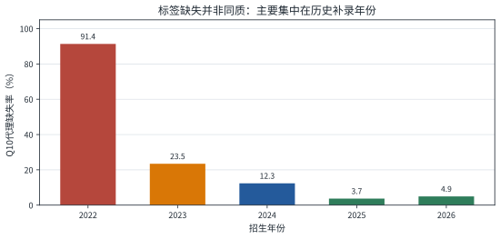
3.8 校年内分布、全国混合分布与三层变异
有了逐人分数后，“全国应用统计拟录取分数分布”不再是唯一对象。若所有考生等权，大规模招生项目获得更多质量；若校年等权，每个已观测项目年份占同等质量；若院校等权，则先均衡同校不同年份，再令每所学校占同等质量。三种经验混合分别写为：
它们分别回答“随机抽取一名拟录取考生”“随机抽取一个校年”“随机抽取一所学校再抽一年和一名考生”时的分数分布，不能互换。精确样本下三种口径的中位数分别为 388、390 和 390 分；加入软证据并按校年与证据质量降权后的敏感性中位数为 391 分，说明全国位置统计对这批软证据较稳健，但这不等于软证据可改写某个校年的精确标签。
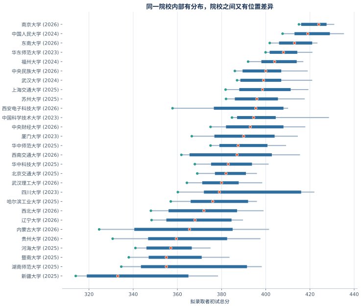
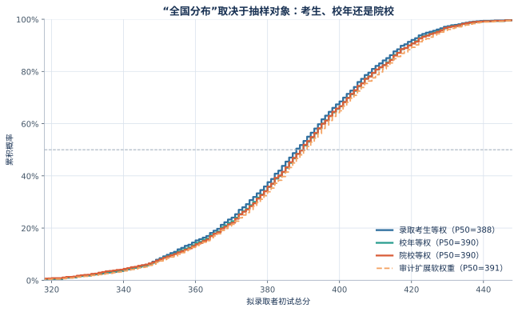
为避免把 2,312 名考生误当成 2,312 个独立年份，本文以院校等权口径分解：
估计得到校年内个体差异、同校跨年波动和院校间差异分别占总方差的 46.1%、10.9% 和 43.0%。逐人数据显著改善校年分布与抽样误差估计，但中心预测的独立时间信息仍主要来自校年和日历年。
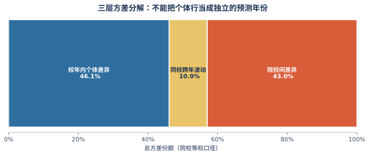
四、门槛预测方法
门槛预测分为“中心位置”和“分布形状”两个层次。中心位置直接决定点预测误差，必须由时间外回测选择；分布形状负责表达学校特异的不确定性，可以综合贝叶斯后验、分位数提升树和残差尾部。这样的职责分离避免复杂模型在点预测没有增益时仍整体接管结果。
4.1 动态特征与市场行为
对学校 \(s\) 在 \(t-1\) 年以前的边际分序列，记稳健位置为中位数 \(\operatorname{Med}_{s,t-1}\)，尺度为 \(1.4826\operatorname{MAD}_{s,t-1}\)，并将尺度下限设为 4 分。上一年冷热异常定义为：
若市场存在均值反转，\(Z_{s,t-1}\) 的系数应为负：上一年异常偏高，下一年部分考生退出；上一年异常偏低，下一年涌入。为描述院校间迁移，在相同 985 身份、相同 A/B 分区且历史难度带相近的集合 \(\mathcal N(s,t-1)\) 中计算：
其余特征包括上一年边际、过去可用边际中位数、上一年边际变化、上一年复试线变化、上一年录取人数对数、年份趋势、985 身份、国家线分区、英语与数学科目，以及相应缺失指示变量。
4.2 弱信息先验贝叶斯正则化回归（分层近似）
设标准化特征向量为 \(x_{s,t}\)，学校指示效应为 \(u_s\)，则候选中心模型为：
截距先验标准差设为 100，静态变量与缺失指示变量为 9，动态变量为 14；市场反转项使用负方向弱信息先验。令设计矩阵为 \(X\)，观测权重矩阵为 \(W\)，先验均值为 \(m_0\)，先验精度为 \(\Lambda_0\)，则高斯近似后验为：
预测残差用 Student-\(t\) 尾部近似，以增加小样本下的尾部质量。学校虚拟变量共享同一先验尺度，因而产生部分池化效果；但当前实现没有为学校方差建立超先验，也没有运行 MCMC 或变分推断。故应准确称为“贝叶斯正则化回归（分层近似）”，而不是完整贝叶斯分层动态模型。
4.3 梯度提升分位数回归
为吸收非线性和低阶交互，分别对 \(\tau\in\{0.50,0.80,0.90,0.95\}\) 拟合梯度提升回归器，最小化加权 pinball 损失：
当前实现使用 180 棵树、学习率 0.035、最大深度 2、最小叶节点 8、子采样比例 0.82，并对输出分位数执行单调排序。这里实际采用的是 scikit-learn 梯度提升树，而非 CatBoost；模型名称必须与代码一致。
4.4 复杂候选分布与稳健锚点
贝叶斯样本与提升树分位数反演样本按 65% 和 35% 构成复杂候选分布：
同时构造两个透明中心基准：历史边际分中位数加当年国家线的稳健锚点，以及上一年边际加当年国家线的上一年锚点。所有候选都必须在逐年时间外回测中竞争，不以模型复杂度预先决定胜者。
4.5 逐年扩窗滚动回测
对检验年 \(t\)，只使用年份严格小于 \(t\) 的记录训练，再预测 \(t\)。2024、2025、2026 年依次形成三个时间外检验折。该设计复刻真实部署：模型在报名时不能看到当年最终录取数据。
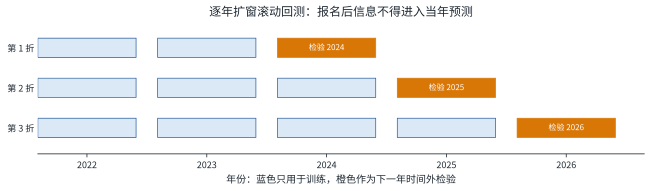
data/processed/rolling_backtest.csv 的检验年份自动生成。
点预测比较使用加权 MAE、绝对误差中位数和低估三倍惩罚的非对称损失。若 \(\widehat y_i\lt y_i\)，损失为 \(3(y_i-\widehat y_i)\)；否则为 \(\widehat y_i-y_i\)：
为减少“用同一批回测既选模型又证明模型”的乐观偏差，本文另做严格中心选择审计：只用 2024-2025 选择中心规则，再把 2026 作为未参与选择的外层检验。胜者仍为全历史相对国家线边际中位数，其 2026 加权 MAE 为 16.79 分。因此最终规则保持不变：可计算稳健锚点时由其负责中心；否则回退到上一年锚点；两者均不可用时才用复杂集成中心。
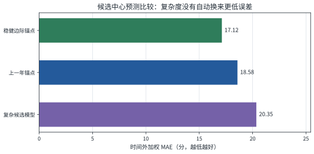
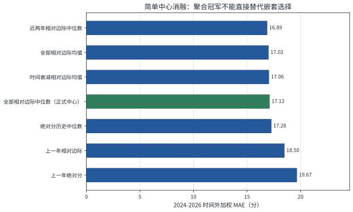
4.6 中心预测与分布形状的职责分离
回测选择结果意味着：复杂候选模型中可以保留的信息，不应等同于让其决定最终点预测。本文先用稳健锚点确定 \(B_{s,t}\)，再将复杂候选样本减去自身中位数，只保留相对形状；该形状在后续分布合成中缩放为原幅度的 0.35。0.35 与贝叶斯/提升树的 65/35 混合均属于工程设定，不是由当前三个测试年份可靠识别的参数；为避免反复调参造成过拟合，本轮不在同一测试集上事后选新值。
这一处理也使模型回退路径可解释：历史充足的学校主要依赖稳健边际锚点；只有上一年信息时采用上一年锚点；两类锚点均缺失时才由复杂集成提供中心。模型复杂度因而服从数据可用性，而不是反过来要求稀疏数据支持高复杂度结构。
4.7 逐人分布形状与预序晋级护栏
精确校年可直接估计各分位点相对 Q10 的形状向量：
候选形状包括：精确校年池化形状、精确加软证据的降权池化形状、上一期同校精确形状与全国池化形状的收缩，以及在上一候选上追加软证据池。每个校年总权重相等，防止大项目凭考生人数支配损失。对外层年份 \(t\) 的候选选择只能使用严格早于 \(t\) 的内层预测原点；若两个候选的分位 MAE 差不超过 0.05 分，则选择依赖更少软证据、结构更简单者。
类似地，逐人复试队列可形成录取选择 AUC、录取比例、录取与未录取分差及队列四分位距，但这些都是报名后信息。它们只能以滞后一期形式进入实验，并须在时间外 MAE 上实质改善才能晋级。该护栏贯彻“尽量使用全部数据”与“不得为使用数据而强行加变量”两项原则。
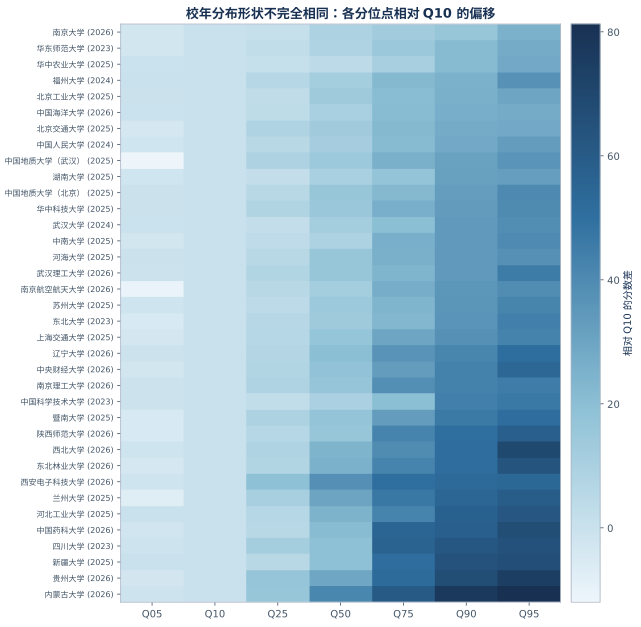
五、事件冲击与预测不确定性
确定预测中心后，还需解释门槛为何可能偏离该中心。本文将不确定性拆分为国家线的共同波动、复杂模型提供的学校特异形状、已知事件的离散情景、未识别事件的厚尾扰动，以及时间外残差校准五部分。这一分解既服务于概率计算，也便于用户识别风险来自公共环境、学校自身还是证据不足。
5.1 国家线共同波动
2027 年国家线中心采用上一年与近五年均值的凸组合：
尺度由扩窗一步预测残差的标准差估计，下限设为 7 分。2027 年 A 区均值为 330.39、标准差为 12.23；B 区均值为 320.39。国家线样本对同区学校产生共同移动，避免把全国性冲击误认为单校事件。
5.2 已知事件的三情景混合
对已核实公告中的重大科目变化、考纲与参考书调整、学制变化等，建立：
三状态分别表示报考退潮、中性消化和考生涌入。当前 5 所事件学校的权重由公告内容、变化幅度与市场机制形成结构化专家先验，均处于“机器核验、待人工终审”状态，不能解释为事件的因果效应。
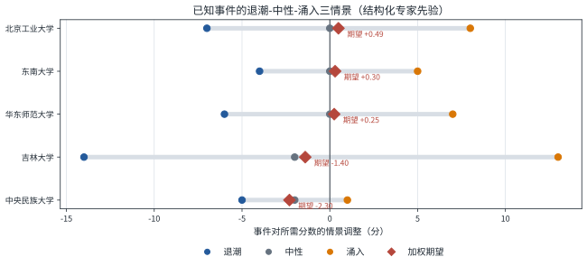
data/processed/events_2027.csv。
5.3 未识别事件与原始未来分布
对未发现明确事件的学校，引入 \(U_{s,t}=2.5t_6\) 的零均值厚尾扰动；已知事件学校不再叠加该项，以避免重复计入。若滚动选择中心为 \(B_{s,t}\)，复杂候选样本中心化为：
则校准前的所需分数样本为：
其中 \(\Delta L_{z_s,t}\) 为国家线预测样本相对其中位数的偏差。系数 0.35 使复杂模型提供学校特异的形状而不推翻回测胜出的中心。
5.4 跨历史预测年份的异方差稳健安全上界
旧方案把全部时间外中位数残差汇总成一个全局偏移，容易得到近似 \(P90=P50+26\) 的统一安全垫，也会让一个异常容易的年份压低下一年的保护。当前方法先用严格位于预测原点之前的信息拟合残差尺度 \(s_i\)：输入包括原始区间宽度、历史样本数、历史边际 MAD、证据权重、代理方法构成、985 身份、分区与回退路径；目标为交叉拟合的 \(\log(1+|y_i-q^{\mathrm{raw}}_{0.50,i}|)\)。然后在每个历史预测年份 \(h\) 内计算标准化中位数残差分位：
对待预测学校，使用其历史证据估计 \(s_{s,t}\)，中心保持原始中位数不动，上尾定义为：
式（18）不会收窄原始上界，并让安全余量随学校特异尺度变化。严格检验时，2025 只能看 2024 残差，2026 只能看 2024-2025 残差。155 条严格嵌套记录上，原始 P90 覆盖率 79.7%、WIS 9.98；稳健 P90* 覆盖率 92.1%、WIS 9.70，但平均上尾宽度由 17.68 增至 29.35 分。由于只有两个校准外层年份，星号表示“暂定安全上界”，不是已证明的精确 90% 频率分位。
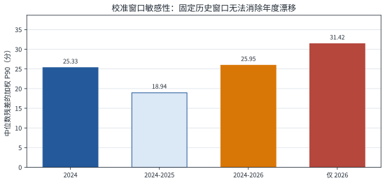
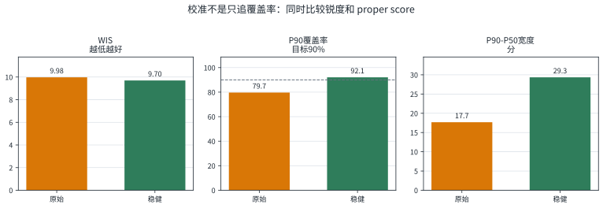
六、从门槛分布到择校决策
前述模型输出的是学校层面的未来门槛分布，尚不能直接回答个人应如何选择。为连接预测与决策，本节把离散分位点还原为近似分布函数，再根据个人估分计算覆盖概率，并将风险偏好与“冲、观察、稳、保”标签明确分开。
6.1 由七个分位锚点构造门槛分布函数
前端保存 \(q_{0.05},q_{0.10},q_{0.20},q_{0.50},q_{0.80},q_{0.90},q_{0.95}\) 七个锚点。若 \(x\in[q_{\alpha_j},q_{\alpha_{j+1}}]\)，则线性插值：
式（19）只在 P05 至 P95 的模型支持区间内使用。若 \(x\lt q_{0.05}\)，前端只显示“≤5%”；若 \(x\gt q_{0.95}\)，只显示“≥95%”。本文不再使用任意 180 分尺度的尾部外推和 1%-99% 截断，避免制造模型并未识别的极端概率。上尾锚点采用稳健安全上界，因此由其得到的概率也应读作保守决策尺度，而不是精确录取概率。
6.2 冲、观察、稳、保的规则
这里“稳”的 90% 是用户给定的保守风险约束。模型同时展示 P80、P90 和 P95，避免把一条标签阈值误当作自然定律。证据完备度较低或存在重大事件时，即使覆盖尺度较高，也应优先查看情景区间和原始来源。
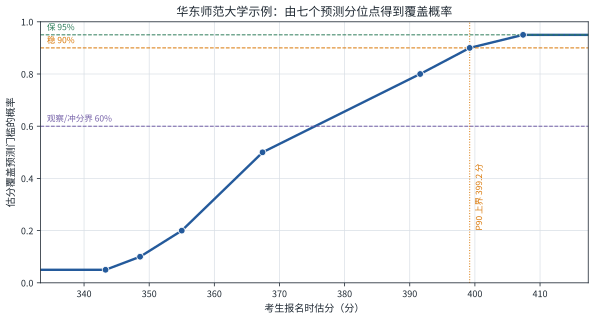
data/processed/forecast_2027.csv。
| 估分 | 375 | 380 | 385 | 390 | 395 | 400 | 405 |
|---|---|---|---|---|---|---|---|
| 覆盖概率 | 约59% | 约66% | 约72% | 约78% | 约85% | 约91% | 约94% |
| 标签 | 冲/观察边界 | 观察 | 观察 | 观察 | 观察 | 稳 | 稳 |
6.3 非对称损失与风险约束的区别
若低估 1 分的损失是高估 1 分的 \(\lambda\) 倍，则非对称绝对损失的 Bayes 最优点为：
当 \(\lambda=3\) 时，\(\tau^*=0.75\)，并不自动得到 0.90。“低估三倍惩罚”用于模型比较，“稳必须达到 90%”是额外的决策约束；二者属于不同层级。
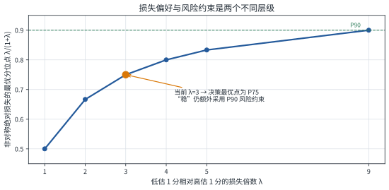
七、实证结果
本节依次报告时间外预测精度、逐年覆盖稳定性、2027 年院校门槛分布和复杂候选模型的变量效应。结果分析不只比较单一平均误差，还同时考察年度漂移、区间覆盖与不同数据条件下的模型回退表现。
7.1 整体回测结果
| 指标 | 数值 | 解释 |
|---|---|---|
| 检验记录数 | 226 | 三个逐年扩窗检验折 |
| 加权 MAE | 17.66 分 | 代理 Q10 上最终选择中心的平均绝对误差 |
| 绝对误差中位数 | 15.22 分 | 降低少数极端误差的影响 |
| 低估三倍非对称损失 | 34.17 | 将低估风险指标视为更高代价 |
| 低估率 | 50.9% | 三年汇总接近对称，但年度方向差异很大 |
| 原始 P80 / P90 / P95 覆盖率 | 74.3% / 82.9% / 87.9% | 修复国家线波动缩放错误后的结果，仍低于名义水平 |
7.2 年度稳定性
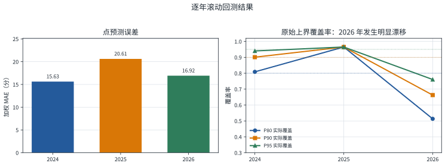
| 年份 | 样本数 | 加权 MAE | 绝对误差中位数 | 低估率 | P80 覆盖 | P90 覆盖 | P95 覆盖 |
|---|---|---|---|---|---|---|---|
| 2024 | 71 | 15.63 | 14.31 | 54.9% | 80.9% | 90.1% | 94.0% |
| 2025 | 78 | 20.61 | 19.40 | 18.6% | 96.5% | 96.5% | 96.5% |
| 2026 | 77 | 16.92 | 14.00 | 73.4% | 51.3% | 66.2% | 76.0% |
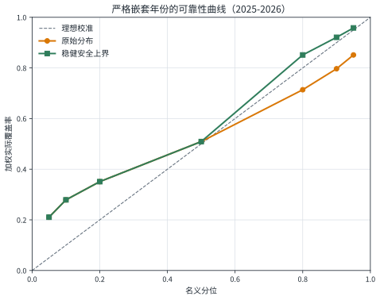
7.3 2027 年院校分布
81 所院校的 P50 均值为 357.6 分、标准差 17.8 分，范围 320.0-403.9 分；稳健 P90* 均值为 391.1 分、标准差 18.9 分，范围 342.4-428.3 分。证据完备度为中等、较低、较高的学校分别为 62、11、8 所；该标签描述数据来源与历史长度，不是已验证的预测置信等级。派系标签分布为：贾茆 31、贾茆Pro 13、纯茆 12、纯贾 12、茆Pro 10、待核实 3 所。
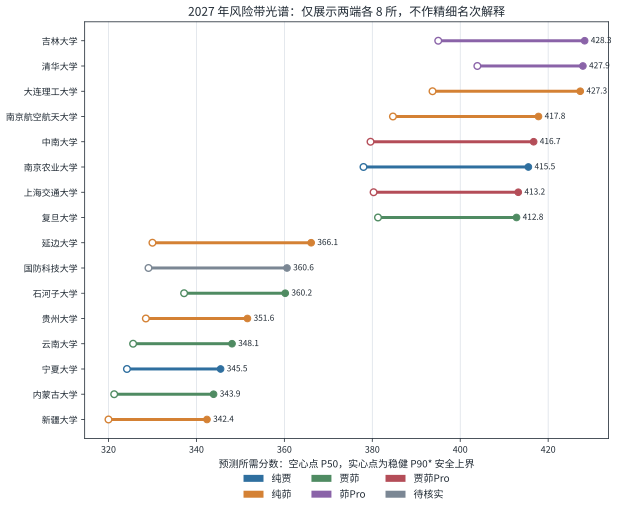
7.4 复杂候选模型中的预测关联
复杂候选模型的标准化系数显示，年份趋势和 985 身份与较高预测边际相关，历史边际中位数、竞校异常与上一年冷热异常在该正则化设定下呈负向关联。冷热项的方向同时可能来自市场反馈和测量误差后的回归均值；竞校项也依赖人工邻域。因此这些量只解释复杂候选，不解释最终稳健锚点的全部中心，更不作因果推断。
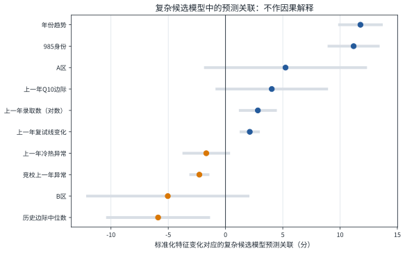
app/data/forecast.json 中的模型参数摘要。
7.5 双层不确定性与安全余量
可预见但不可消除的未来波动包括国家线、考生竞争、已知事件情景和未识别事件，属于未来随机性；历史短、参数不稳、代理 Q10、来源缺失和模型选择不足属于知识不确定性。原始分布主要表达前一类和部分参数形状，稳健安全上界再加入基于历史预测失败的保护。新增逐名样本已量化顺序统计插值的观测误差和经验 Q10 的抽样误差，但尚未将它们作为独立方差分量完整传播到所有学校；考生估分不确定性按本轮研究边界不进入模型。
必须进一步区分“原始尾部异质性”和“安全层异质性”。81 校原始 P90-P50 的变异系数只有 0.04，说明生成分布的尾部宽度仍相当同质；稳健上界的变异系数升至 0.18，当前大部分学校差异实际由校准尺度与证据安全层产生，不能写成复杂模型已经充分学会学校特异尾部。本文因此同时展示两层，而不以 P90* 覆盖原始 P90。
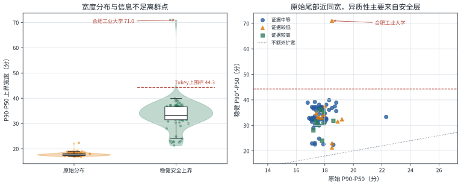
7.6 精确标签对中心预测的回溯检验
77 个精确校年覆盖 2022-2026 年，其中 54 个位于既有 2024-2026 时间外回测折，可在同一对象上比较冻结基线与精确标签增强模型。冻结基线在真实 Q10 上的 MAE 为 15.83 分、RMSE 为 19.51 分；替换精确历史标签并重算滞后状态后，MAE 降至 14.90 分、RMSE 降至 18.93 分。按年份先求配对 MAE 差再做年份块 bootstrap，增强模型减基线的估计为 -1.51 分，90% 区间为 [-2.68,-0.33]。
这比只在代理标签上比较更接近研究目标，但仍不能当作独立确认：只有 2024、2025、2026 三个日历年，且名单获取并非随机。增强模型因此被记录为“有支持的回溯升级候选”，不覆盖结果揭示前已冻结的 2027 数值。未来应在 2027 及后续新原点上评分，避免反复使用同三年调参。
7.7 分布形状模型与软证据的实际增益
在 57 个具有严格先前信息的精确校年上，任何全局、院校经验贝叶斯或岭校正都没有通过预序中心护栏，最终 Q10 仍采用稳健锚点，MAE 为 15.54 分。形状层中，全国精确池化的七分位平均 MAE 为 6.05 分；使用最近一期同校精确形状收缩后降至 5.73 分。追加 5,199 条软证据的原始最低值为 5.732 分，比纯精确滞后形状的 5.733 分只低约 0.001 分，未越过 0.05 分的简约性等价带，故最终选择较简单的纯精确滞后形状。
完整拟录取分布的七分位平均 MAE 为 15.16 分，校年内考生实现率从 Q05 到 Q95 依次为 17.9%、21.0%、27.2%、42.3%、64.7%、79.7% 和 89.7%，平均绝对校准误差为 8.55 个百分点。该分布适合解释“若校年门槛状态确定，其拟录取群体可能如何展开”，尚不能替代第六节对未来门槛 \(G_{s,t}\) 的决策概率校准。
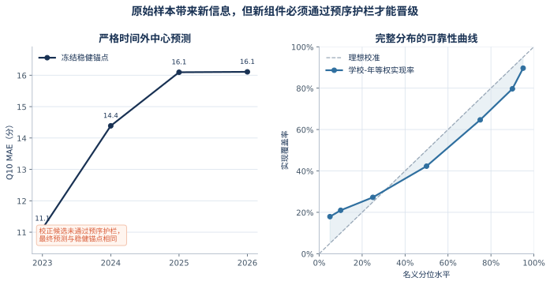
7.8 复试队列中的分数—录取选择关系
明确图例且录取、未录取各不少于 3 人的 200 个校年复试队列包含 10,246 条去重成绩，覆盖 70 所学校和 2022-2026 年。校年内用初试分数排序录取结果的 AUC 中位数为 0.876，录取比例中位数为 77.3%，录取者与未录取者初试中位数差的校年中位数为 17 分。绝大多数校年中初试分数具有较强排序信息，但不同十分位组的录取比例区间仍宽，且个别校年 AUC 接近或低于 0.5，说明复试、专项清理、并列规则和名单口径仍会改变最终结果。
把 AUC、录取比例、分差、队列四分位距和样本量严格滞后后加入岭校正，只在 2026 年形成 14 个与精确 Q10 同时可得的外层校年；其 MAE 从锚点的 16.59 分恶化为 21.84 分。该模块因此只用于解释 Q10 的制度边界和形成未来候选变量，不进入当前中心模型。
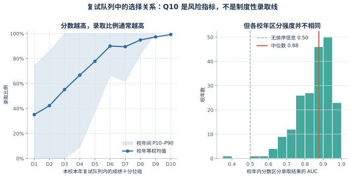
八、稳健性分析
8.1 中心模型选择的稳健性
稳健边际锚点在 210 个可比样本上的加权 MAE 为 17.12 分，上一年相对边际为 18.50 分。二者差值 -1.38 分；按学校聚类 bootstrap 的 95% 区间约为 [-2.57,-0.19]，但按仅三个日历年份做 block bootstrap 的区间约为 [-3.26,0.16]，跨过 0。故准确结论是“当前回测中稳健锚点表现更好”，而不是已证明其普遍优越。只用 2024-2025 选择、2026 外层检验的结果仍选中稳健锚点，降低了胜者诅咒风险。
8.2 校准窗口敏感性
简单时间衰减与直接上尾 conformal 在严格检验中没有同时改善校准和 WIS，因而没有上线。跨预测年份最不利残差方案在 2025 年偏保守（P90 覆盖 100%），在 2026 年把覆盖由 66.2% 提高到 85.8%；两年合计为 92.1%。这说明稳健方案能抵抗容易年份冲淡风险，但仍有明显的年份条件偏差，只能作为暂定安全上界。
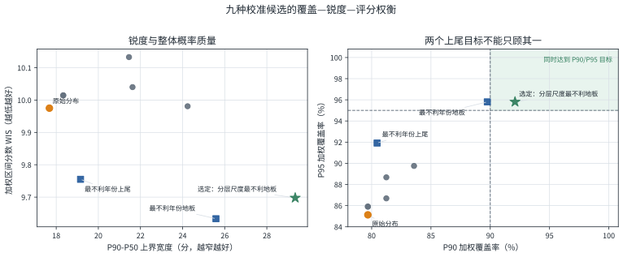
8.3 Q10 代理敏感性
295 个可用代理中，143 个由最低分与中位数插值得到，120 个只能使用最低分，32 个属于小样本最低分。73 个精确配对首次覆盖两类主要方法：50 个顺序统计插值代理平均低估 2.85 分、MAE 为 3.14 分；23 个仅最低分代理平均低估和 MAE 均为 6.05 分。后者偏差更大且几乎同向，说明最低分不能直接当作 Q10，也说明未来观测误差模型应按方法分别估计偏差和方差。
54 个可配对时间外校年上，精确标签增强模型的 P50 MAE 从 15.83 降至 14.90 分，RMSE 从 19.51 降至 18.93 分。年份等权 MAE 差为 -1.51 分，90% 年份块 bootstrap 区间 [-2.68,-0.33] 未跨 0；但区间只建立在三个日历年上，且名单可得性存在选择偏差。因此准确结论是“当前三年回溯样本支持精确标签增强”，而非已经获得普适或前瞻保证。下一步应继续扩展官方原件并冻结规则，用新年份验证方法特异观测误差模型。
8.4 事件权重敏感性
事件权重目前为专家先验。对任一学校，可在概率单纯形上扰动 \(\pi^{(-)},\pi^{(0)},\pi^{(+)}\)，观察 P90 与个人标签是否改变。若小幅权重扰动即可使“稳”变为“观察”，应把该校标记为事件敏感，而不只显示加权平均。吉林大学的三情景跨度为 27 分，明显高于东南大学的 9 分，故前者需要更强的情景展示与人工核验。
8.5 损失偏好敏感性
当 \(\lambda\) 从 1、2、3、4、5 增至 9 时，最优分位点依次为 0.50、0.667、0.75、0.80、0.833、0.90。用户把“稳”设为 90% 实际对应极强的低估厌恶。若用户愿意承担更高落榜风险以换取学校层次，可改用 P80 或期望效用排序，但标签定义应保持透明且不可在结果出现后反向调整。
8.6 国家线、先验与条件覆盖
国家线单独一步预测中，“沿用上一年”MAE 为 8.14，优于 0.55/0.45 凸组合的 9.70；但将国家线放回学校边际锚点后，凸组合的学校门槛 MAE 为 17.12，反而优于上一年国家线方案的 18.84。因此生产模型保持凸组合，避免用子模块冠军替换整体冠军。先验敏感性中，较紧先验改善复杂候选，但该候选并不负责正式中心，且比较仍复用三个年份，所以不据此事后调参。
条件覆盖同样不均衡：稳健上界在 985 组的 P90 覆盖约为 86.6%，非 985 组约为 95.1%；A 区约为 91.3%，B 区样本少且为 100%。证据完备度“较高”组只有 3 条，无法验证误差单调性。因此总体 92.1% 不能解释为每所学校都达到 90%。
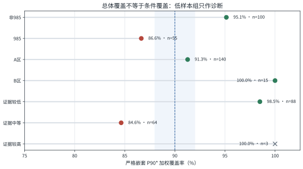
| 对象 | 当前来源 | 本文处理 |
|---|---|---|
| 中心模型 | 时间内选择 + 2026 外层检验 | 正式使用稳健边际中位数 |
| 国家线 0.55/0.45 | 工程规则 + 联合消融 | 整体模型更优，暂保留 |
| 形状系数 0.35、混合 65/35 | 工程设定 | 不在同一三年测试集事后调优 |
| 代理权重 | 结构化专家判断 + 50 个插值、23 个最低分代理配对 | 已确认方法差异；尚未用同一批数据重估生产权重 |
| 逐人分布形状 | 57 个严格外层精确校年预序比较 | 选择同校滞后精确形状；软证据增益未过 0.05 分护栏 |
| 复试选择特征 | 200 个描述性校年；14 个严格滞后外层校年 | 解释机制但 MAE 恶化，不进入生产中心 |
| 事件概率与幅度 | 结构化专家先验 | 只作情景分析，不称因果概率 |
| 稳健安全上界 | 严格前推候选 | 标 P90*，等待新年份确认 |
九、讨论：方法价值、局限与推广
9.1 方法价值
- 口径透明。将拟录取初试低位风险指标与复试线区分，所有代理公式、来源等级与审计折减均可复算。
- 符合真实时间顺序。滚动回测严格模拟报名前预测下一年的使用场景，避免随机划分造成的时间泄漏。
- 复杂度受证据约束。复杂模型在回测中没有胜出时，不强行替代稳健锚点；同时保留其非线性尾部与解释价值。
- 事件方向不确定性显式化。退潮-中性-涌入混合比单一事件加减分更符合考生市场行为。
- 输出与决策相连。原始分布、稳健安全上界、覆盖区间、冲稳保标签、证据完备度和不确定性来源在同一框架中呈现。
- 信息按角色充分利用。精确、软证据、诊断与结果未知记录分别服务于门槛、形状敏感性、复试队列分布和质量复核；未通过精确闸门不等于删除。
- 可复现。正文图表、附录表和指标摘要由同一 Python 程序读取仓库数据自动生成，数据刷新后可整体重算。
9.2 研究局限
- 77 个精确 Q10 虽覆盖 2022-2026 年，但学校覆盖只有 44 所、可用于既有时间外比较的只有 54 个校年；真正独立的回测日历年仍很少。
- 名单快照属于可哈希的二级证据而非招生单位官方原件；四项核对或结构一致规则降低了 OCR 错误风险，但 5,199 条软证据与 1,562 条诊断记录仍需逐校补官方名单和人工复核。
- 每校历史很短，难以可靠识别学校特异趋势、结构突变和复杂跨校网络。
- 事件情景权重尚未由历史同类事件频率校准，属于结构化专家先验。
- 稳健上界已完成 2025-2026 的嵌套滚动检验，但只有两个外层年份，P90* 仍不具备充分的频率覆盖证据。
- 按本轮研究边界，考生估分被当作确定值；模拟卷、主观题评分与复习进度不进入模型。
- 学校层面聚合会掩盖学院、方向、考试科目组合和名额口径的差异。
- 覆盖概率不包含复试、单科线、体检、政审及个人排序，不能取代官方规则。
- 复试队列选择分析依赖颜色图例且录取名单可能不是完整复试总体；AUC 与录取比例只能作描述性机制证据。
9.3 提升精度的优先路线
| 优先级 | 改进项 | 具体方法 | 验证标准 |
|---|---|---|---|
| P0 | 逐名录取数据扩展 | 为现有 77 个精确校年补官方原件，优先复核软证据中对外部汇总差异最小的校年 | 学校覆盖扩大；新年份时间外增益稳定 |
| P0 | 报名时计划名额 | 当前严格面板仅 5 条回测记录；继续保存简章统招名额与后续实际执行名额两个时点 | 扩大跨校跨年覆盖后再做无泄漏名额弹性检验 |
| P1 | 潜在真实门槛模型 | 用方法特异偏差、方差和 Q10 bootstrap 误差区分代理测量误差与状态波动 | 新年份 WIS、MAE 和条件覆盖同时改善 |
| P1 | 事件历史库 | 把往年考纲、参考书、名额和学制变化编码为可复用事件面板 | 滚动窗口内学习情景权重 |
| P1 | 观测误差状态空间 | 区分潜在真实门槛 \(Y^*\) 与代理观测 \(\widetilde Y\) | PSIS-LOO、时间外加权区间分数 |
| P1 | 稳健上界再验证 | 保持算法冻结，用 2027 新原点作真正前瞻检验 | WIS、覆盖误差、区间宽度与条件覆盖 |
| P2 | 个人估分分布 | 本轮明确排除；未来由多次模拟卷和主观题评分区间建立 \(S_i\) | 后悔值与稳定择校概率 |
| P2 | 竞校网络 | 用地理、课程、难度和用户行为共同学习迁移图 | 时间外消融优于当前人工邻域 |
9.4 双重不确定性与决策推广
若考生真实可达分数也视为随机变量 \(S_i\)，则更完整的门槛覆盖概率为：
进一步可在单志愿约束下定义期望效用 \(U_s\)，把学校偏好、地域、培养方向、通勤与落榜损失共同纳入：
其中 \(\gamma\) 可设为 0.90 或 0.95。该框架可推广到其他单志愿或先选择后揭示结果的决策问题，例如推免夏令营、海外项目申请和部分职业资格考试，但目标定义与损失函数必须随场景重设。
十、结论
本文把考研择校问题重构为“报名前信息集下的拟录取初试低位风险预测”，而不是对上一年分数线作简单平移。针对 81 所 985/211 院校全日制应用统计专业，研究以普通统考拟录取初试总分 Q10 为首选目标；对名单可核对的校年直接计算经验 Q10，对其余校年使用透明代理；以相对国家线边际、严格滞后特征、稳健锚点和事件情景共同形成未来门槛分布，再把历史预测失败转化为单独的稳健安全上界。
修复实现不一致后，2024-2026 年 226 条时间外记录上的代理 Q10 加权 MAE 为 17.66 分，原始 P90 覆盖率为 82.9%。在 2025-2026 的 155 条严格嵌套记录上，原始分布 P90 覆盖率为 79.7%、WIS 为 9.98；稳健 P90* 覆盖率为 92.1%、WIS 为 9.70，但平均上尾宽度由 17.68 增至 29.35 分。它是对低估代价较高场景的有用安全尺度，却不是已证明的精确 90% 频率分位。
数据层共保留 14,317 条可读成绩，并按精确标签、软证据、诊断复核、明确未录取和结果未知五类角色使用。77 个精确校年的逐人样本不仅替换代理，还校准了代理误差和 Q10 抽样误差：顺序统计插值与仅最低分代理分别平均低估 2.85 和 6.05 分；54 个精确时间外校年上，增强模型 MAE 从 15.83 降至 14.90 分。逐人分布同时揭示校年内个体差异占总变异 46.1%，同校跨年占 10.9%，院校间占 43.0%；同校滞后形状有实际增益，而软证据的额外增益不足以晋级。
复试队列分析进一步表明，初试分数与录取结果高度相关但并非确定性阈值；滞后队列特征还未改善门槛预测。因此当前系统适合用作公开、可审核的风险辅助工具，不适合包装成“录取保证器”。严格校准仍只有 2 个外层年份，精确标签回测也只有 3 个日历年，计划统招名额回测仍只有 5 条。下一阶段应优先补官方逐名原件、报名时计划名额和历史事件面板，并把方法特异代理偏差、Q10 抽样误差与未来状态波动纳入潜在真实门槛模型。2027 基线继续按 2026-10-08 的哈希清单独立保存，结果揭示后只评分、不回调。
参考文献
[1] Koenker R, Bassett G. Regression Quantiles[J]. Econometrica, 1978, 46(1): 33-50.
[2] Hoerl A E, Kennard R W. Ridge Regression: Biased Estimation for Nonorthogonal Problems[J]. Technometrics, 1970, 12(1): 55-67.
[3] Friedman J H. Greedy Function Approximation: A Gradient Boosting Machine[J]. The Annals of Statistics, 2001, 29(5): 1189-1232.
[4] Gneiting T, Raftery A E. Strictly Proper Scoring Rules, Prediction, and Estimation[J]. Journal of the American Statistical Association, 2007, 102(477): 359-378.
[5] Tashman L J. Out-of-sample Tests of Forecasting Accuracy: An Analysis and Review[J]. International Journal of Forecasting, 2000, 16(4): 437-450.
[6] Gelman A. Prior Distributions for Variance Parameters in Hierarchical Models[J]. Bayesian Analysis, 2006, 1(3): 515-534.
[7] Romano Y, Patterson E, Candès E J. Conformalized Quantile Regression[C]//Advances in Neural Information Processing Systems. 2019, 32.
[8] 教育部. 2022-2026 年全国硕士研究生招生考试考生进入复试的初试成绩基本要求[EB/OL]. 相关官方 PDF 链接见仓库 data/processed/national_lines.json.
[9] 吉林大学数学学院. 2027 年硕士研究生招生考试初试科目调整公告[EB/OL]. 2026-04-29.
[10] 华东师范大学统计学院. 2027 年应用统计硕士考试范围与参考教材调整说明[EB/OL]. 2026-07-21.
[11] 东南大学统计与数据科学相关院系. 2027 年初试参考书及复试科目调整公告[EB/OL]. 2026-06-25.
[12] 北京工业大学研究生招生网. 2027 年 432 统计学考试大纲调整公告[EB/OL]. 2026.
[13] 中央民族大学研究生院. 应用统计专业学制调整说明[EB/OL]. 2026.
[14] Bracher J, Ray E L, Gneiting T, Reich N G. Evaluating Epidemic Forecasts in an Interval Format[J]. PLOS Computational Biology, 2021, 17(2): e1008618.
[15] Carroll R J, Ruppert D, Stefanski L A, Crainiceanu C M. Measurement Error in Nonlinear Models: A Modern Perspective[M]. 2nd ed. Boca Raton: Chapman & Hall/CRC, 2006.
[16] Tibshirani R J, Foygel Barber R, Candès E J, Ramdas A. Conformal Prediction Under Covariate Shift[C]//Advances in Neural Information Processing Systems. 2019, 32.
[17] Efron B, Tibshirani R J. An Introduction to the Bootstrap[M]. New York: Chapman & Hall/CRC, 1994.
[18] David H A, Nagaraja H N. Order Statistics[M]. 3rd ed. Hoboken: Wiley, 2003.
[19] Gelman A, Hill J, Vehtari A. Regression and Other Stories[M]. Cambridge: Cambridge University Press, 2020.
[20] 统计战线统数圈. 应用统计硕士院校历年复试与拟录取名单公开展示、名单图片及详情接口[DB/OL]. 2022—2026[2026-10-09]. 逐校 URL、支持字段、访问状态与图片哈希见伴随《逐字段公共数据来源目录》及 roster_asset_manifest.csv.
[21] 各招生单位研究生院、学院及中华人民共和国教育部. 应用统计招生简章、专业目录、考试科目、复试线、复试与拟录取名单及国家线文件[EB/OL]. 2022—2026[2026-10-09]. 共 940 个去重公开 URL，逐条题名或用途说明、权威等级和访问状态见伴随《逐字段公共数据来源目录》.
数据来源说明：研究者工作簿仅是内部证据索引，不列为公共数据集参考文献。正文事实数据的底层来源为第 [20]-[21] 项所概括的公开页面、文件和名单资产；940 条逐项引文另成伴随来源目录。事件公告的完整 URL、发布日期、机器核验状态和情景参数保存在 data/processed/events_2027.csv。
附录 A 2027 年 81 所院校预测表
为避免假精度，下表只给 5 分风险带：中心区间来自 P50，原始 P90 区间来自生成分布，稳健上界区间来自 P90*。表格按稳健上界分组后排序，同一 5 分带内不解释名次。证据完备度不等于预测置信等级；“证据不足：不宜精算”表示上界宽度越过预先声明的异常阈值，该行不得据此与其他学校作精细难度排序。院校派系使用“纯贾、纯茆、贾茆、茆Pro、贾茆Pro”五类及“待核实”，仅用于课程结构筛选。
| 序号 | 院校 | 985 | 区 | 派系 | 中心区间 | 原始P90区间 | 稳健上界区间 | 证据完备度 | 上界可比性 |
|---|---|---|---|---|---|---|---|---|---|
| 渲染时由 forecast_appendix.csv 自动注入 81 所院校数据。 | |||||||||
附录 B 数据字典、复现协议与隐私边界
B.1 主要数据文件
| 文件 | 作用 | 关键字段/输出 |
|---|---|---|
data/processed/program_year.csv | 学校-年份建模面板 | 复试线、录取统计、Q10 代理、权重、审计码、滞后特征 |
data/processed/rolling_backtest.csv | 逐年时间外回测 | 真实目标、各分位预测、中心候选、权重 |
data/processed/events_2027.csv | 事件三情景输入 | 事件类型、公告日期、三情景调整与权重、来源链接 |
data/processed/forecast_2027.csv | 81 所院校最终预测 | 原始分位、稳健上界、证据完备度、派系、事件、分解与中心路径 |
app/data/forecast.json | 网页使用的公开模型快照 | 模型元数据、预测、变量效应、回测行、国家线历史 |
data/audit/source_audit.json | 来源覆盖与数据问题审计 | 学校数、校年数、精确/代理目标数、复核问题 |
data/processed/program_year_provenance.csv | 字段级来源台账 | 学校、年份、字段、原值、工作簿单元格、公开 URL、来源类型与权威等级 |
data/processed/source_url_audit.csv | 唯一 URL 健康检查 | 访问状态、HTTP 状态码、检查方法、时间与错误摘要 |
data/processed/program_year_supplemental_provenance.csv | 独立值级补充证据 | 只收录与原表数值吻合的接口/名单来源；差异项不覆盖原值 |
data/processed/school_master_supplemental_provenance.csv | 院校静态字段补充证据 | 培养单位、学习方式、四门初试科目与学制的值级语义核对 |
data/processed/roster_asset_manifest.csv | 逐名名单资产清单 | 公开图片 URL、内容哈希、校年映射与抓取状态；原图仅在本地私有目录保存 |
data/processed/candidate_label_audit.csv | 精确标签质量闸门 | 人数、最低分、中位数、最高分四项核对、Q10 与晋级状态 |
data/private/candidate_initial_scores.csv | 本地私有逐名初试分 | 仅供标签计算，不进入公开仓库；公开层只保留校年级汇总与核对状态 |
data/private/retest_initial_scores.csv | 本地私有复试/录取成绩 | 已录取、明确未录取和结果未知分数；去重后只输出校年聚合 |
data/processed/retest_selection_summary.csv | 复试选择关系汇总 | 校年样本量、录取比例、AUC、分差与复试队列分位数 |
data/processed/retest_score_only_summary.csv | 结果未知成绩汇总 | 只描述复试队列分布，不生成录取标签 |
data/processed/public_source_bibliography.csv | 逐项公共来源目录 | 940 个去重 URL、题名/用途、支持字段、权威等级与访问状态 |
data/audit/score_row_utilisation.json | 逐行数据用途审计 | 14,317 条成绩在精确、软证据、选择关系、分布敏感性与复核层的去向 |
docs/provenance_protocol.md | 来源与隐私协议 | 证据层级、字段链接规则、值级核对、隐私最小化与复现命令 |
paper/assets/v5/distribution_figure_metrics.json | 逐人分布图表摘要 | 本文新增图形的样本范围、指标和隐私声明 |
paper/assets/v3/data_manifest.json | 可复现数据清单 | 数据冻结时间、Git commit、dirty 状态、关键文件 SHA256 |
data/audit/forecast_freeze_2027.json | 2027 前瞻基线冻结清单 | 模型、输入、输出及核心脚本哈希；结果揭示后只评分不回调 |
docs/reviewer_70_point_response.md | 七十项方法审查响应 | 逐条判断、已完成改动与剩余数据条件 |
B.2 计算环境与复现协议
统计计算使用固定 Python 环境和随机种子；基础回测图、逐人分布图、附录院校表和来源目录分别由版本化脚本从处理后数据生成。图形程序不接受手工输入的图中数值，所有数值均回写 JSON 指标摘要。复现顺序为：核验冻结基线；重建来源台账和名单质量闸门；运行精确标签、层级分布与复试选择实验；生成图表；最后渲染正文和伴随来源目录。任何一步失败都不得沿用旧图冒充新结果。
B.3 文档与来源目录
正文采用 HTML、MathJax 与矢量图统一排版，公式在浏览器完成后再输出 A4 PDF；附录 A 的 81 所院校由冻结预测表注入。伴随《逐字段公共数据来源目录》采用横向页面列出 940 个公开 URL、支持字段、访问状态和访问日期，作为正文第 [20]-[21] 项的逐项展开。该来源目录引用的是底层公开材料，不把研究者工作簿包装成可公开检索的数据集。
B.4 复现边界
2027 前瞻预测的信息截点为 2026-10-07 23:59（Asia/Hong_Kong），并于 2026-10-08 冻结；独立核验程序检查 10 个数值产物是否与冻结清单一致。2026-10-09 新增的来源台账、链接检查、历史逐名标签与复试队列实验只用于回溯研究，不回写前瞻基线。逐人原表、名单图片和候选哈希留在本地私有层；公开仓库只包含聚合统计、证据等级、URL、内容哈希与质量审计。若结果揭示前因资料勘误必须修订，应另建版本并保留当前基线；结果揭示后不得把修订版冒充本次前瞻预测。